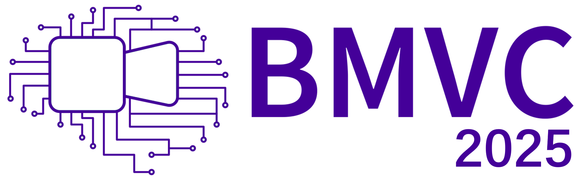
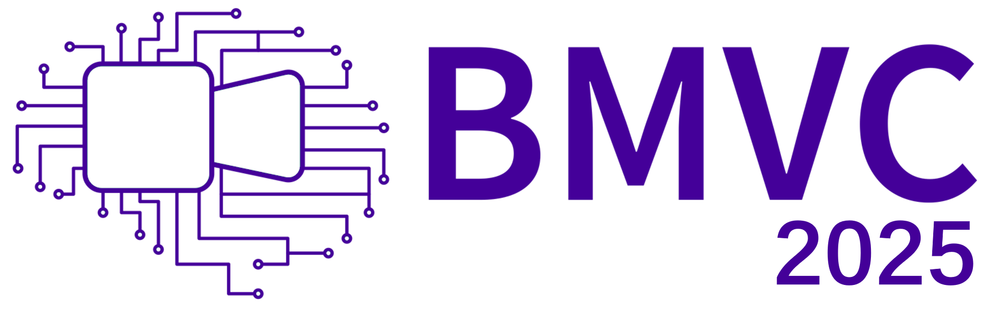

The 36th British Machine Vision Conference (BMVC) 2025, 24th – 27th November 2025, Sheffield, UK
Introduction
Welcome to the workshop on Smart Cameras for Smarter Autonomous Vehicles and Robots! This one-day event at BMVC 2025 brings together vision, robotics, and computational imaging experts to discuss challenges, applications, and innovations in embedded camera systems for robotic platforms.
Many advances in the development of autonomous robots and self-driving cars are limited by the embedded sensors.
Arguably, the most important sensors in autonomous vehicles and robots are the cameras.
The complete navigation and driving pipeline relies on high-quality visual input data.
Vision-based algorithms for object recognition and scene understanding are key to ensure proper navigation and interaction in the real-world, however, what happens if the camera gets damaged?
What if the visual information is noisy? The safety and proper behavior of many autonomous systems depends on the quality and reliability of the cameras.
For this reason, we introduce the 1st workshop “Smart Cameras for Smarter Autonomous Vehicles and Robots” to unify low-level vision, computational photography and robotics.
Call for Papers
We invite paper submissions on topics related to computational photography and low-level computer vision with applications in robotics and autonomous driving.
The topics include, but are not limited to:
- camera‑based perception
- lens andd optics
- image signal processors (ISP)
- image restoration
- new imaging sensors
- drone and aerial photography
- novel image datasets
- sensor fusion
- real‑time processing
- vision language models (VLMs and VLAs)
- edge AI
Submission platform: https://cmt3.research.microsoft.com/SmartCameras2025/
Papers must follow the same format as BMVC 2025 main conference. The reviewing process is double blind. Dual submissions are not allowed. Accepted papers must be presented at the workshop. Author Guidelines of BMVC 2025.
Important Dates
| Submission deadline | 31st August 2025 |
| Notification of acceptance | 10th September 2025 |
| Camera‑ready submission | 22 September 2025 |
| Workshop date | 27 November 2025, Sheffield, UK |
The Microsoft CMT service was used for managing the peer-reviewing process for this conference. This service was provided for free by Microsoft and they bore all expenses, including costs for Azure cloud services as well as for software development and support.
Challenges
TBDSpeakers

Ziteng Cui
University of Tokyo
TBD
Schedule
| Morning session #1 | 9:00 AM – 10:45 AM |
| Morning Coffee Break | 10:45 AM – 11:15 AM |
| Morning session #2 | 11:15 AM – 1:00 PM |
| Lunch Break | 1:00 PM – 2:00 PM |
| Afternoon session #1 | 2:00 PM – 3:45 PM |
| Afternoon Coffee Break | 3:45 PM – 4:15 PM |
| Afternoon session #2 | 4:15 PM – 6:00 PM |
Organizers

Larissa Triess
Mercedes-Benz R&D

Arturo Deza
CEO of Artificio

Juan C. Benito
CIDAUT AI

Daniel Feijoo
CIDAUT AI
Other members
CIDAUT AI
Program Commitee
Marcos V. Conde, Larissa Triess, Arturo Deza, Lin Gu, Ziteng Cui, Juan C. Benito, Daniel Feijoo, Javier Abad Hernández, Paula Garrido, Álvaro GarcíaContact {marcos.conde, juaben, alvgar}@cidaut.es
Sponsors & Supporters
 
